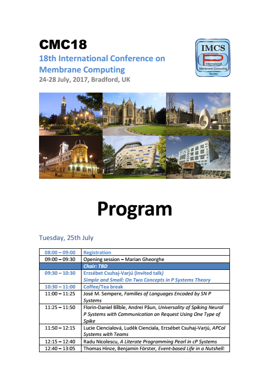
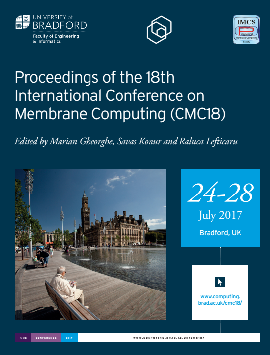

Conference Program
The final program is now available.
The Preliminary Proceedings of CMC18 can be downloaded as a PDF file here.
 Invited speakers
Erzsébet Csuhaj-Varjú
Erzsébet Csuhaj-Varjú is the head of the Department of Algorithms and Applications at the Faculty of Informatics, Eötvös Loránd University, Budapest and she is the head of the PhD School in Informatics at the University.
Between 1979-2011, she worked for the Computer and Automation Research Institute of the Hungarian Academy of Sciences in different positions (research fellow, senior research fellow, principal investigator), in the period 1997-2011 as the head of a research group.
She obtained her M.Sc in 1977 in mathematics and the title dr. rer. nat. univ. in 1981 in computer science (Kossuth Lajos University, Debrecen, Hungary), degree C.Sc in mathematics (Ph.D equivalent) in 1993 (Hungarian Qualification Committee), title D.Sc (Doctor of the Hungarian Academy) in 2003, title dr. habil. in 2008 (Eötvös Loránd University, Budapest), in computer science.
Her main research interests are formal languages and its applications, natural computing, in particular bio-inspired computing, distributed systems, and natural language processing. In these areas she (herself or with co-authors) has more than 190 publications (articles in international journals and edited volumes, a monograph) and she edited 18 volumes. She has been co-founder of the area of grammar systems, a formal language-theoretic counterpart of the theory of multi-agent systems. She also has several important contributions to molecular computing and membrane computing. Among others she has launched (with her co-authors) research vistas theory of networks of language processors and P automata (membrane automata) theory. Her publications have obtained over 1300 independent citations.
She has been the supervisor (principal investigator) and participant of several Hungarian and bilateral granted research projects, team leader of EU projects. She is the chair of the Advisory Board of the International Membrane Computing Society and the Hungarian team leader of the European Molecular Computing Consortium. She is a member of the editorial board of International Journal of Foundations of Computer Science. In the last ten years, she has been program committee chair, co-chair, program committee member and organizer of over 50 international workshops and conferences, among them she was programme committee co-chair and chair of the organizing committee of FCT 2007, AFL 2008, CMC13, CiE 2014, MFCS 2014, AFL 2017.
She has been supervising Ph.D, M.Sc and B.Sc students, she had visiting postdoctoral fellows from different countries of Europe. She is serving as member in several scientific/educational committees of the Eötvös Loránd University, Faculty of Informatics and in scientific committees of the Hungarian Academy of Sciences.
Harold Fellermann
Harold Fellermann is a Lecturer for Molecular Systems Modelling in the School of Computing Science, Newcastle University. He obtained his Ph.D. in Applied System Science in 2009 from the University of Osnabrück, Germany, and has worked as Research Associate and Visiting Scientist at the Center for Fundamental Living Technology, Odense Denmark; the European Center for Living Technology, Venice Italy; the Complex Systems Lab, Barcelona Spain; and the Los Alamos National Laboratories, Los Alamos USA.
Harold's research interests revolve around molecular systems that connect the realm of chemistry with the realm of the living. Despite being computational in its core, most of his work has been performed alongside experimental chemical implementations. Having previously worked on emergence of self-replication, evolution and history in molecular systems, Harold's recent work focusses on molecular and biological information processing and computation — as most recently the in-vitro implementation of a molecular stack data structure.
Michael Fessing
Michael Fessing is a Lecturer in Molecular and Cell Biology at the Faculty of Life Sciences, University of Bradford. He received MSc in Biotechnology from Lomonosov Moscow Institute of Fine Chemical Technology and PhD in Molecular Biology from Lomonosov Moscow State University in Russia. Michael had his postdoctoral training in St Jude's Children Research Hospital in Memphis, TN, Massachusetts General Hospital/Harvard Medical School, Tufts University and Boston University in Boston, MA, USA.
Michael major research interests involve epigenetic mechanisms of gene regulation during skin development, homeostasis and regeneration. His current research in focused on the role of covalent DNA modifications and ATP dependent chromatin remodelling in skin and hair regeneration. Michael also studies how spatial genome organization controls gene transcription in skin epithelial stem cells and their differentiating progenies during skin development and homeostasis. He was a member of organizing committee for the International Symposiums on Epigenetic Regulation of Skin Regeneration, Ageing and Disease held in Bradford in 2012 and 2016.
Maciej Koutny
Maciej Koutny received his MSc (1982) and PhD (1984) in Applied Mathematics from the Warsaw University of Technology, Poland. In 1985 he joined the then Computing Laboratory of the University of Newcastle upon Tyne, and now works in the School of Computing Science. His research interests centre on the theory of distributed and concurrent systems, including both theoretical aspects of their semantics and application of formal techniques to the modelling, synthesis and verification of such systems; in particular, model checking based on net unfoldings and synthesis of Petri nets from transition systems. He has also investigated non-interleaving semantics of priority systems, and the relationship between temporal logic and process algebras. He has been working on the development of a formal model combining Petri nets and process algebras as well as on Petri net based behavioural models of membrane systems.
Maciej Koutny is the chair of the Steering Committee of the International Conferences on Application and Theory of Petri Nets and Concurrency, and a member of EATCS and IFIP Working Group 2.2 on Description of Programming Concepts. He serves as an editor-in-chief of the LNCS Transactions on Petri Nets and Other Models of Concurrency - ToPNoC, and is a member of the editorial boards of Natural Computing, Le Matematiche, and Scientific Annals of Computer Science. His Programme Committee chairmanship includes: ICATPN'01, ACSD'08, CHINA'08, MeCBIC'10 and CONCUR'12, and he was the scientific co-director of the 5th Advanced Course on Petri Nets held in 2010. Maciej is an Adjunct Professor at McMaster University, Canada. In 2011 he held the Pascal Chair at Leiden University, The Netherlands. He has also been a Visiting Professor at Xidian University, China; University of Evry, France; Nicolaus Copernicus University, Torun, Poland; and University Paris 12, France.